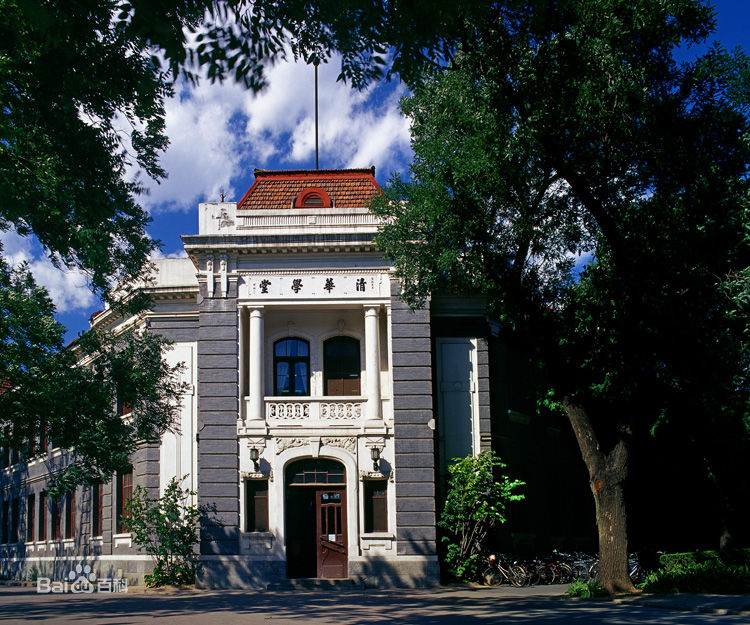
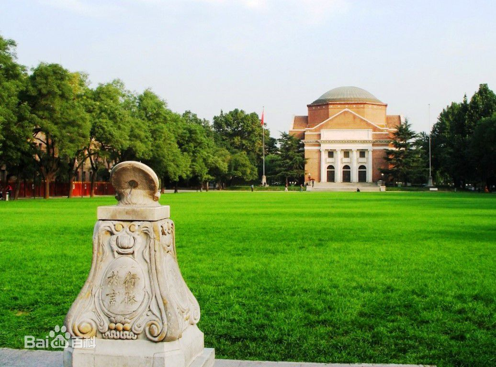
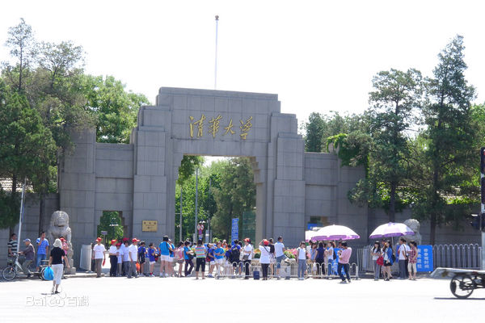
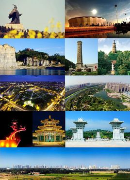

学校专业:清华大学人文社会学院马克思主义理论与思想政治教育专业毕业，在职研究生学历，法学博士学位.   
永城，位于河南省最东部，豫、皖、苏、鲁四省结合部。[1] 东临萧县、淮北，南接濉溪、涡阳，西靠亳州，北倚砀山、夏邑，芒砀北峙，浍水南环，东接淮徐，西连梁宋，素有“豫东门户”之称，是河南省东引西进的桥头堡。[2] 永城取意“永久坚固，摧而不毁”[3] ，商代境内出现了棘国，为永地，有芒、砀、酂等地。隋大业六年（610年）置永城县，金代为州[4] ，抗战期间为中共豫皖苏省委所在地[5] ，1996年撤县设市[6] ，2014年由河南省政府全面直管。[7] 永城因汉高祖刘邦在芒砀山斩蛇起义被誉为“汉兴之地”[8] ；因有出色的面粉加工能力被国家授予“中国面粉城”称号，[9] 2016年被评为“中国食品工业强市”[10] ；永城是河南省最大的煤化工基地，永城煤矿区是全国六大无烟煤基地之一[11] ；永城市人均公园绿地面积12.77平方米，绿化覆盖率41.56%，[12] 是河南省生态建设示范市、国家园林城市[13] 、国家卫生城市[14] ，全市百岁老人占总人口的十万分之七以上，80岁以上的老人占总人口的2.37%，被评为“中国长寿之乡”[15] 。 永城位于黄淮平原，总面积2020平方公里，全境除芒砀山群外，大部分为平原。辖6个街道，25个乡镇，户籍人口157万（2015年）[16] 。永城境内有芒砀山、陈官庄烈士陵园、日月湖、造律台、崇法寺塔等旅游景区。 
第十五届中央候补委员，十六届、十七届、十八届中央委员，十七届中央政治局委员、常委、中央书记处书记，十八届中央政治局委员、常委、中央委员会总书记。第十一届全国人大第一次会议当选为中华人民共和国副主席。十七届五中全会增补为中共中央军事委员会副主席。第十一届全国人大常委会第十七次会议任命为中华人民共和国中央军事委员会副主席。十八届一中全会任中共中央军事委员会主席、中华人民共和国主席、中华人民共和国中央军事委员会主席。